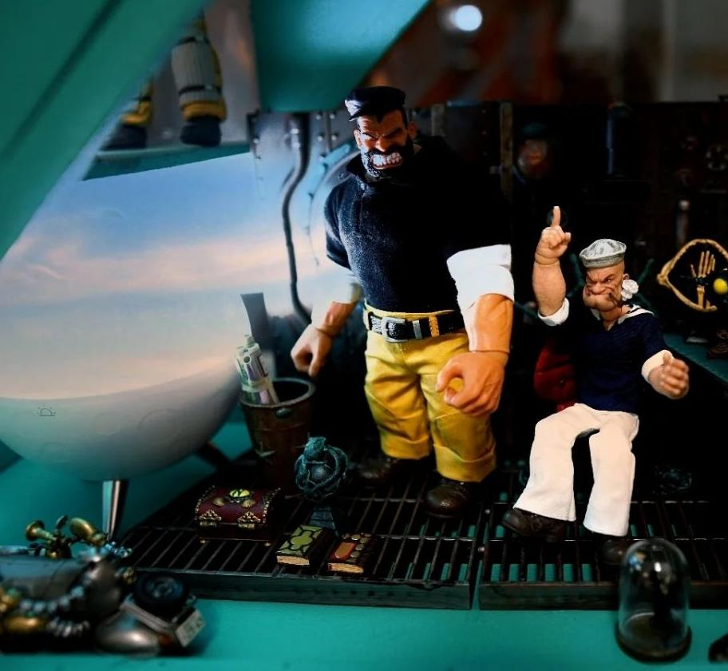
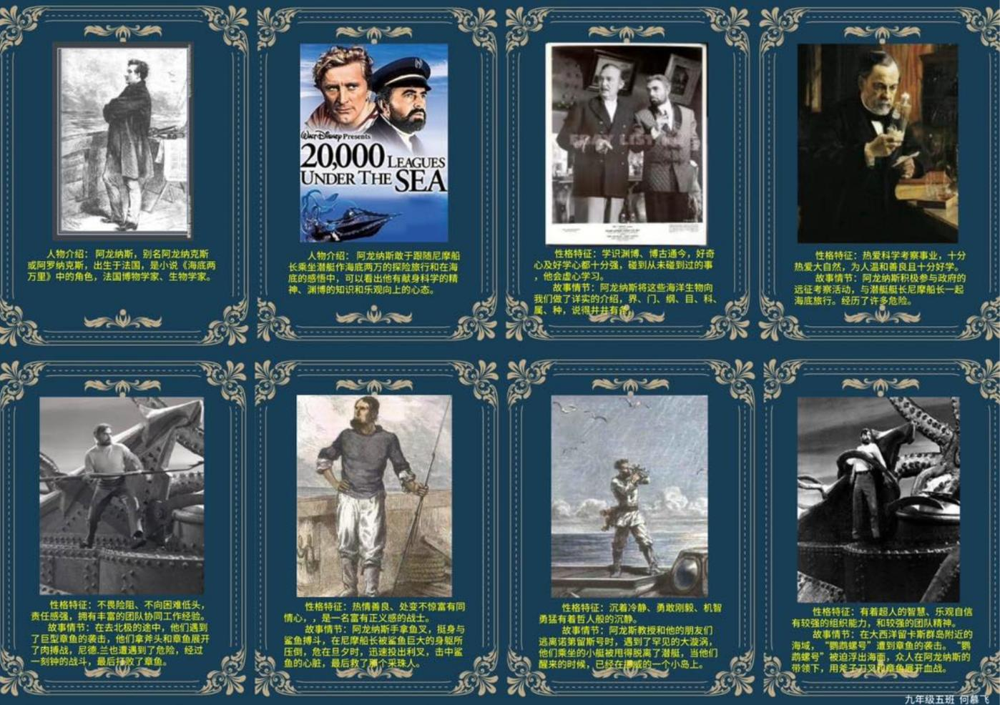
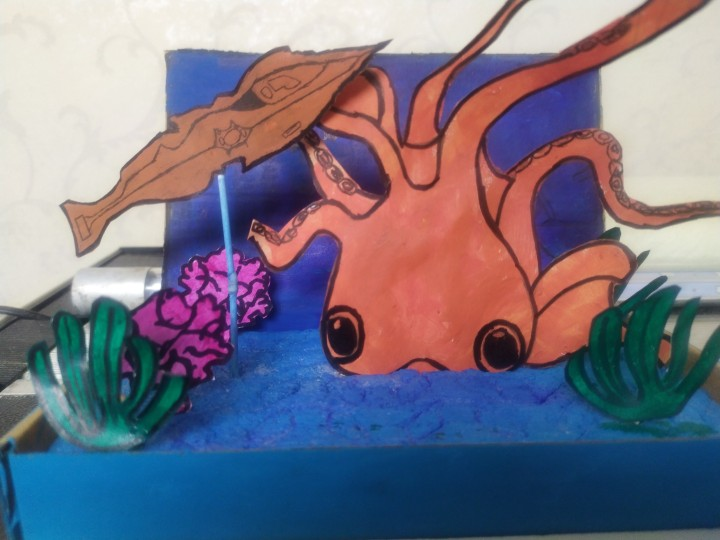

鹦鹉螺号档案馆
在《海底两万里》凡尔纳的想象世界之中，有一艘神奇的潜艇，世界上第一艘核潜艇就用的它的名字。究竟是什么让这艘潜艇有如此魅力？是因为它提前了数十年让人们用上了“电”的黑科技？是因为它那可以达到一小时五十海里的惊人速度？是因为它内部自成一个小世界，各种所需应有尽有的神奇？还是因为凡尔纳严密的计算与数字的罗列，让人折服？不妨进入鹦鹉螺号档案馆，一起跟随这位“预知未来”的作家，探寻潜艇的秘密
人物：

（注：以上图片来自沈芮伊组）
舰艇与海底财富：

（注：左图来自汪文述组，右面两图来自史新蕊，周小寒组）